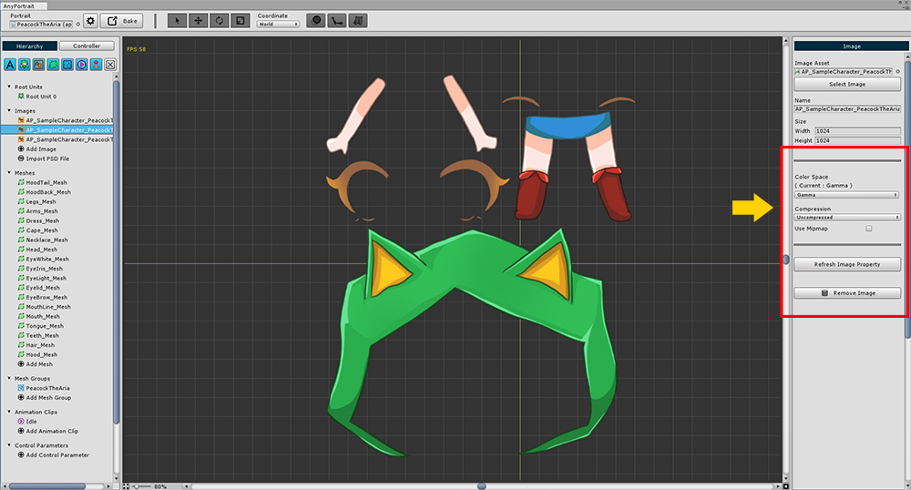

AnyPortrait > 메뉴얼 > Linear Color Space와 Asset 설정
Linear Color Space와 Asset 설정
1.0.1

이미지의 Asset 설정을 AnyPortrait에서 바로 변경할 수 있습니다.
1. Color Space : 프로젝트의 렌더링 설정에 따라 이미지의 Color Space 설정을 변경합니다. Gamma 또는 Linear 값을 가집니다.
2. Compression : 이미지의 압축 방식을 설정합니다. 3단계의 압축 방식과 비 압축 방식이 제공됩니다.
3. Use Mipmap : 밉맵을 적용할지 여부를 설정합니다.
1. Color Space 변경하기

Player Settings에서 프로젝트의 Color Space를 변경할 수 있습니다.
Color Space에 관한 자세한 내용은 관련 페이지에서 확인할 수 있습니다.

Color Space에 따라서 렌더링 결과가 다릅니다.
따라서, 프로젝트의 Color Space에 맞게 설정을 변경해야 합니다.

모든 이미지의 Color Space를 변경합니다.

Bake 다이얼로그에서 Color Space를 선택합니다.
2. 이미지 압축 방식 변경하기

이미지의 압축 방식을 변경할 수 있습니다.
기본적으로는 이미지를 압축하여 사용하도록 권장하지만,
2D 캐릭터라는 특성상 비압축 방식으로 선명한 이미지를 사용할 수도 있습니다.
2D 게임이므로 밉맵이 필요하지 않을 수 있습니다.
밉맵을 해제하는 것을 권장합니다.